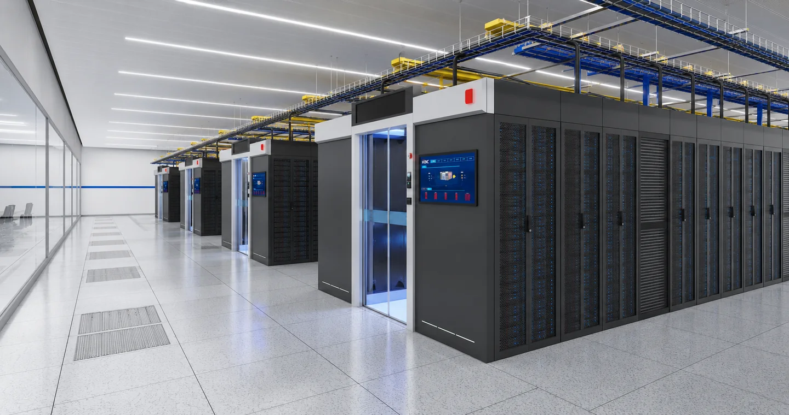

KAYAS Veri Merkezi
Yatırım, tasarım, teknoloji ve gelecek için tek karar yüzeyi
197 sayfalık rehberin web-native sürümü; teknik açıklamaları yatırım kararları, kanıt kapıları, fazlama ve H3C çözüm eşleştirmesiyle birlikte dinamik olarak sunar.
OPEN-CONFIRMATION REQUIRED206 IT kabinet sayım kapsamı ve yardımcı kabinetlerin fiziksel sayımı yazılı H3C teyidine tabidir.

Konsept görselUygulama projesi değildir.
Yönetici karar çerçevesi
Bugün ne yapılmalı, ne hazırlanmalı, ne talep ile açılmalı?
BUGÜN YAPILMALI
Resmî güç/bağlantı ve load design; statik-sismik-yangın; 8°C su test/izin; Faz-1 MEP ve commissioning; iki fiziksel fiber/MMR; ölçüm/DCIM; IaaS/colo/backup hizmet tasarımı; siber/operasyon modeli; normalize teklifler ve finansal model.
ALTYAPISI BUGÜN HAZIRLANMALI
Gelecek OG/AG/UPS/jeneratör alanları ve busway koridorları; liquid cooling headers/CDU alanı; ikinci fiber/ODF kapasitesi; ayrı-site DR arayüzleri; 800G-ready fiziksel yol; BESS, PQC, edge ve AI genişleme rezervleri.
MÜŞTERİ TALEBİYLE
İlave GPU/60-100+ kW rack, GPUaaS, wholesale/dedicated hall, PaaS/DBaaS, multi-cloud, edge düğümleri, on-prem quantum donanımı ve 500/1.000/2.000 rack fazları.
Kritik kanıt kapıları
Kaynak ve sürüm
Orijinal belge dosyaları
PDF
Yatırım ve Teknoloji Rehberi — PDF
Sabit düzen, görseller, tablolar ve sayfa bazlı referans için.
DOCX
Yatırım ve Teknoloji Rehberi — düzenlenebilir kaynak
Editoryal güncelleme ve kontrollü sürüm üretimi için.
Yayın sınırı
Bu rehber bağlayıcı teklif, uygulama projesi, kesin mühendislik hesabı, kesin SLA, sertifika veya yatırım getirisi garantisi değildir. Tier III ifadesi hedefi belirtir; sertifikasyon kanıtı değildir.